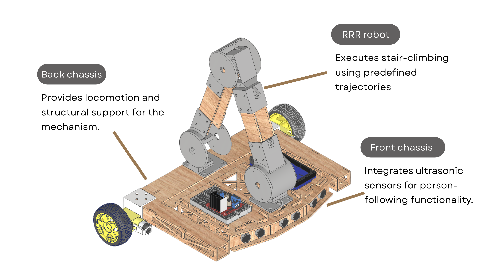
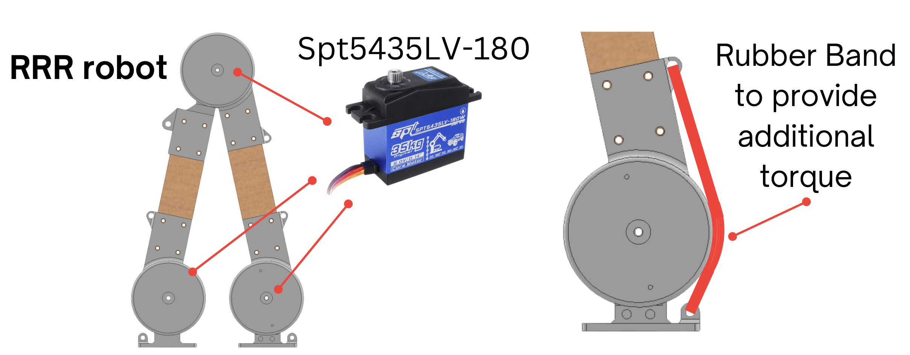
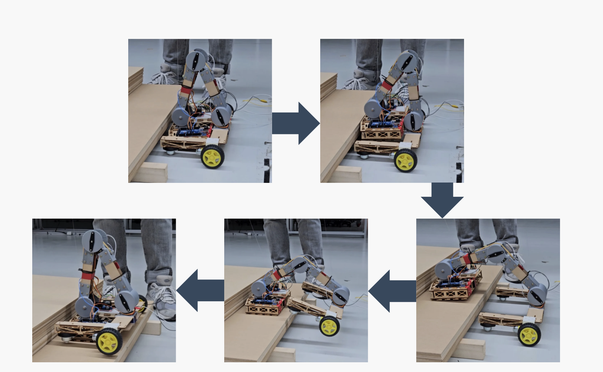

Stair‑Climbing Robot
autonomous following • stair climbing
OVERVIEW
- Conceived the project to address the everyday challenge of carrying heavy loads upstairs.
- Developed a person-following function that allows the robot to accompany and assist users.
- Created a stair-climbing mechanism that expands robotic mobility beyond flat ground.
DESIGN
MECHANISM DETAILS
PERSON-FOLLOWING DEMO
STAIR-CLIMBING EXPLANATION
- Decomposed the stair-climbing motion into five frames and determined the end-point coordinates relative to the back chassis.
- Applied inverse kinematics and Denavit–Hartenberg parameters to compute joint angles at each frame.
- Used cubic polynomials to generate smooth trajectories connecting the joint angles across frames.
STAIR-CLIMBING VIDEO
FUTURE WORK
- Detect and adapt to varied step heights and terrains.
- Upgrade to higher power‑density actuation while reducing mass.
- Integrate millimeter‑wave positioning for robust person localization.